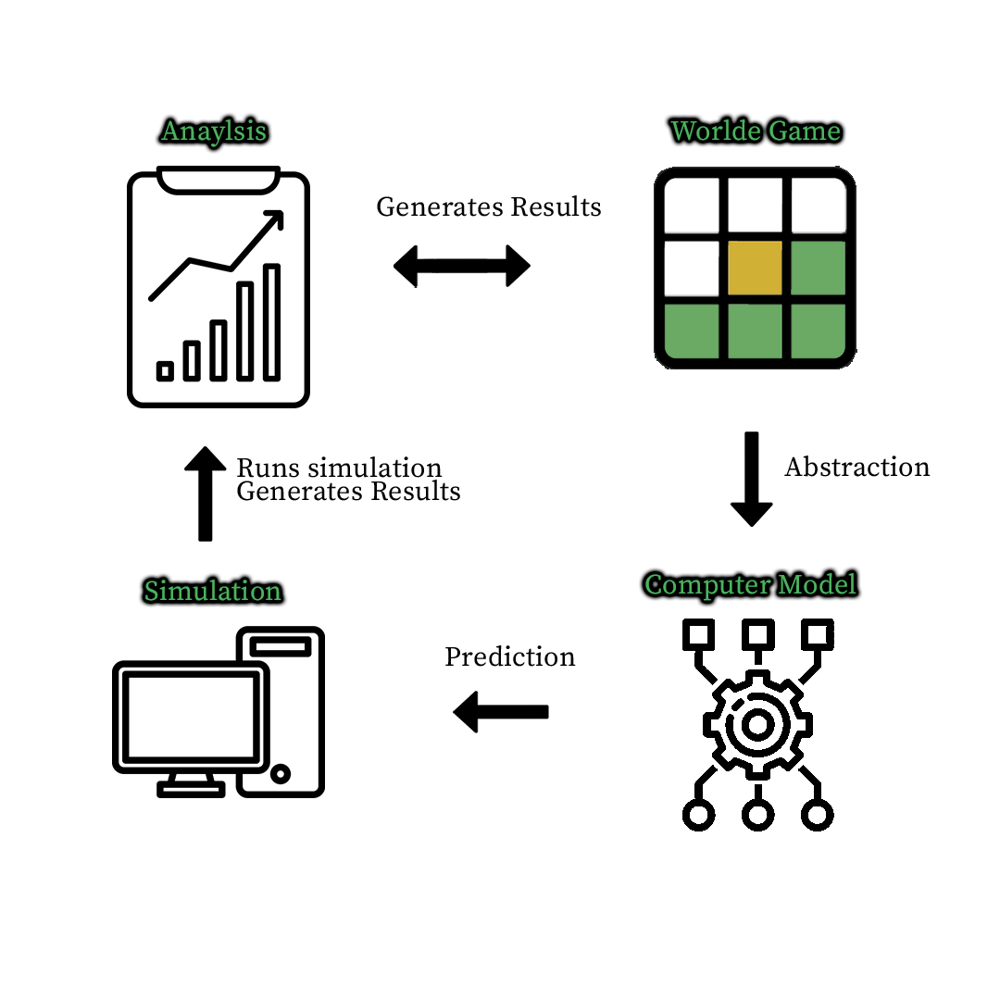

Design
Above is a flowchart explaining the design of the three modes in my game.
Below is a the plan I used for my project to ensure all objectives were met.
|
GAMES |
Play Game to Completion
|
Randomness |
Three Inputs |
Single-Player |
Multi-Player |
Simulation Play |
Stores Data |
Algorithms that perform statistical analysis |
Test Hypotheses |
Changing Parameters |
Future Predictions |
|
WORDLE |
Coded in python. Letters can be coloured using "import colorama"
|
Random word each time |
Which mode they'd like to play.
The user's guesses.
Would they like to see the rules, (y/n)
Would they like to play again?
|
Normal wordle game. |
I can create an individual game code for each word. And when entered. Two people can simultaneously be trying to guess the same word. |
I would code a wordle "bot" to the best of my ability |
Would store previous results. Can compare this to the simulation results performed by the bot.
|
Letter occurrences in the answers. What position they're most likely to be in.
Find the mean, mode, frequency of both the user's and the bot's results and compare them. |
Is a wordle bot able to outperform a user? Will a wordle bot be quicker than a user? Is my "what if" scenario more difficult? |
Will Wordle be harder when only receiving feedback if the letter is green? I believe it will be close to impossible for a user but maybe a computer bot could be better. |
Will the bot perform better than the user? What is the expected number of guesses of a user compared to the bot? |
System Architecture
I made use of modelling and abstraction in my project too.
I used abstraction to simplify the problem by focussing on the more important parts of the problem first. For example, I did not focus on graphics or universal design until the very end.
I used modelling when developing my simulation creating a simulation as it allowed me to create a model to test hypotheses, and could be modified easily for my "What If" Scenario.
This model I created allowed me to store data and perform anaylsis on it to prove or disprove my hypotheses.
My "What If" scenario increased the difficulty of the game by removing the "Yellow Letter" feedback. I wanted to see how an increase in difficulty affects a user compared to my simulation.
Waterfall Approach

I used a mix of the waterfall approach and agile approach.
For each part of my project I used the waterfall approach to design, plan, code and test.
However, if I was ever stuck on a part of my code, I might begin planning another part of my project and come back to it later with a fresh mind.
I used decomposition to break up my project into smaller manageable projects, and by using a mix of both development approaches, I found this method suited me best to form my project.
Waterfall Approach

I also made a custom favicon for my website which you can see in the icon bar.